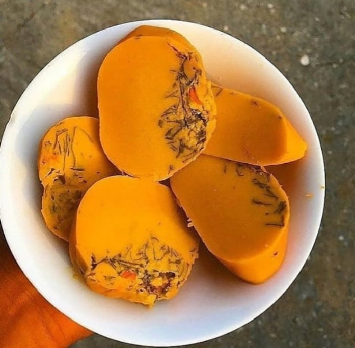

Okpa

Description.
Okpa is a widely consumed food across Nigeria. It is made from Bambara beans. It has a wide range of health benefits, is relatively easy to prepare and very delicious.
Ingredients
- Okpa flour (500 grams)
- Palm Oil (50ml)
- Ground Crayfish (2 Tablespoons)
- Bouillon cubes (2)
- Red Onion(1, chopped)
- Ground Chilli Pepper (1 Tablespoon)
- Salt
- Warm water
- Container
Steps
- Pour the flour into a bowl, add palm oil and mix thoroughly until the flour changes from white to orange
- Next, add the warm water and mix thoroughly until there is no lump, but it should not be too watery.
- Add the ground crayfish, bouillon cubes, onions, pepper and salt to taste. Mix thoroughly
- Pour the mixture into a container and place in a pot of boiling water. Leave to boil for 45 minutes to 1 hour.
- The Okpa should be ready after 1 hour. Leave to cool. Serve and Enjoy.